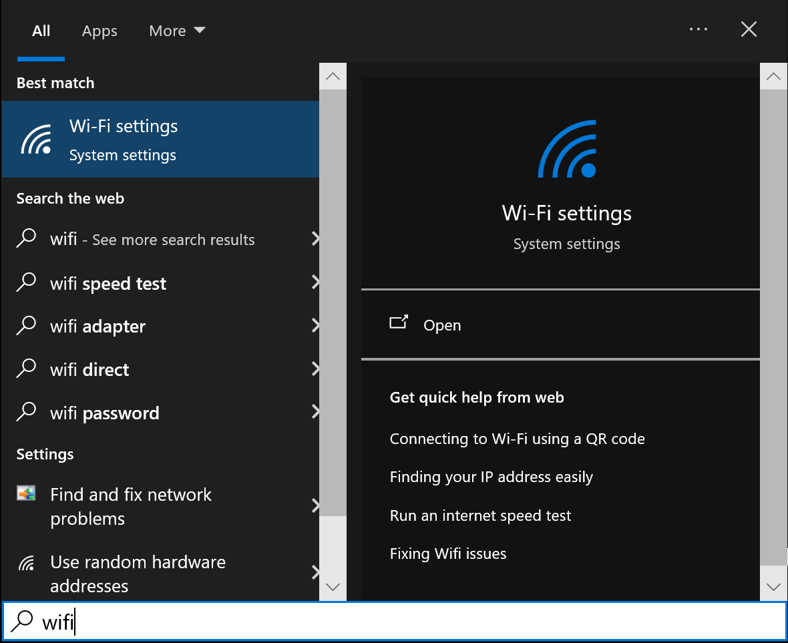
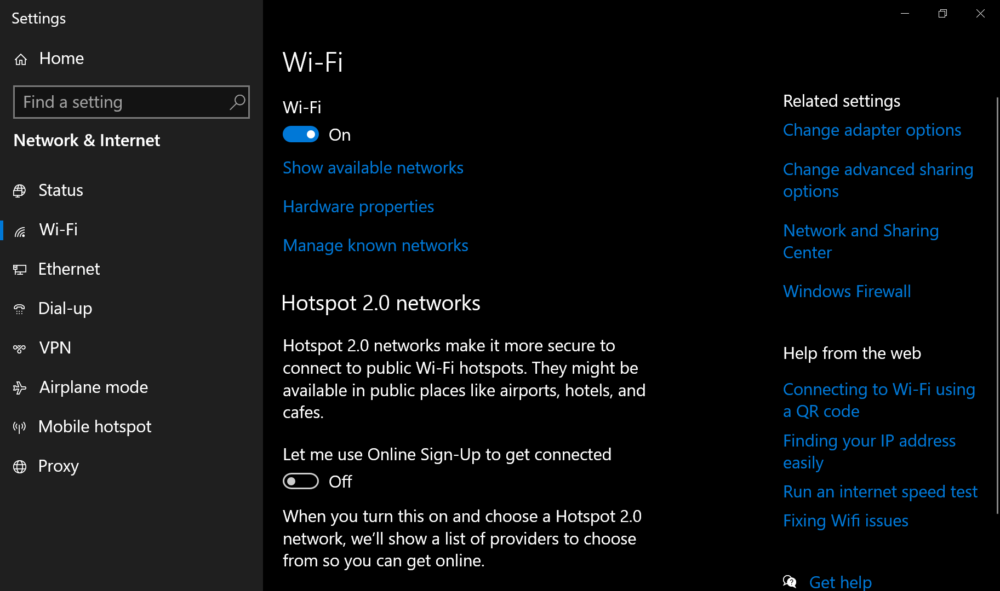
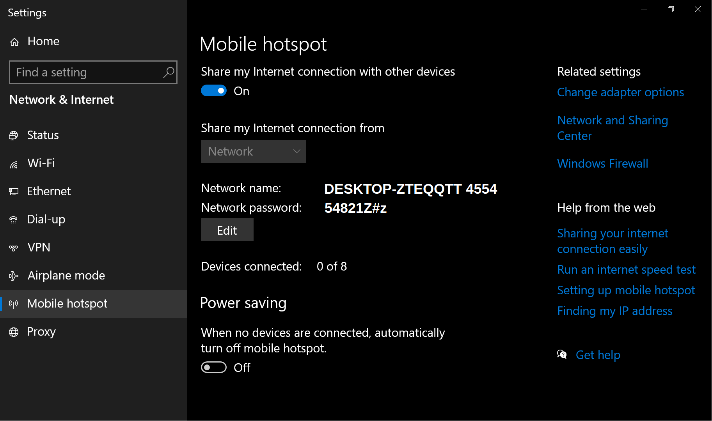
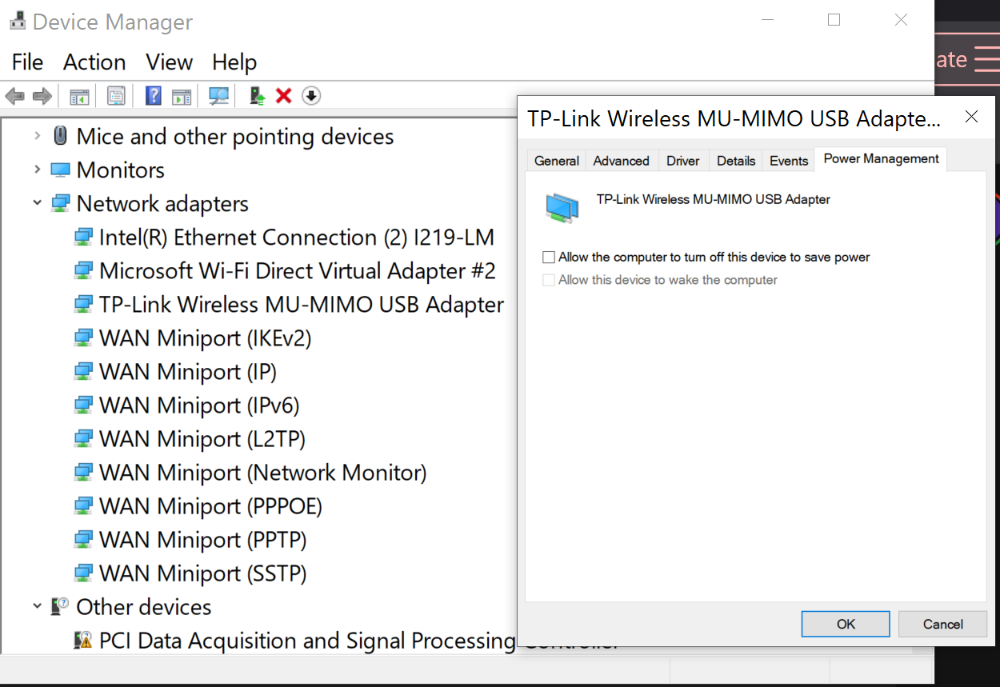
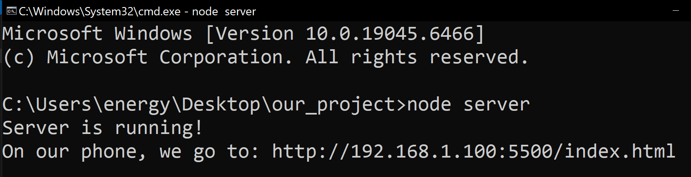

IoT Networking: Establishing a Subspace Hotspot
Welcome to Hardware Engineering! Before our 3D tactical holograms can visualize live data from external sensors, we must establish a secure, local communications network. On Windows, using a standard Wi-Fi antenna, we can configure our main computer to act as a central server (a Mobile Hotspot). We will then connect our mobile devices to this network and use Node.js to broadcast our very first server response!
Phase 1: Activate Main Comm Array
First, we must ensure our primary Wi-Fi capabilities are online. Search your Start menu for: WiFi

Toggle your Wi-Fi connection to the On position.

Phase 2: Establish the Mobile Hotspot
Now we transform our computer into a local broadcast tower. Turn On our Mobile Hotspot. It shows us the Network Name and Network Password.

Engineering Warning: Make sure to turn Power Saving off, or else it will keep disabling the hotspot when it doesn't have a device connected.
Phase 3: Override Power Constraints
To ensure our connection never drops, we must override the hardware power settings. Search the Start menu for: Device Manager.
In Device Manager > Network Adapters > TP-Link (or the model you own), we RIGHT CLICK on the adapter and choose PROPERTIES.
We UNCHECK the Box for "Allow the computer to turn off this device to save power" and press OK. This way our connection will always stay on instead.

Phase 4: Connect the Mobile Device
In our Cell phone Wireless Settings, we make sure Wireless is turned on.

Connect our Cell phone to our Network:
- In our Cell phone click on Settings > Wi-Fi
- Connect to DESKTOP-ZTEQQTT 4554 (or your specific Network Name)
- Enter the password you noted in Phase 2.

Now our phone is connected to our computer network!
Phase 5: Get Computer's Address
For our computer and mobile devices to communicate, the mobile devices need our computer's exact address.
- Open our Windows Command Prompt (type cmd into the start menu).
- In Command Prompt we Type
ipconfigand press Enter. - Scroll to find Wireless LAN adapter Local Area Connection (or it might say Mobile Hotspot).
- Look for the IPv4 Address. It will look like: 192.168.1.100
Write that down. This is the "front door" of our server.

Phase 6: Construct the Node.js Server
Make a New Folder and Name It our_project. We will put our server.js and index.html in this folder.
// The Server Script (server.js)
const http = require('http');
const fs = require('fs');
const server = http.createServer(function(req, res)
{
// read the index.html file located in the same folder
fs.readFile('index.html', function(err, data)
{
if (err)
{
res.writeHead(404);
res.end("Error: index.html not found!");
return;
}
// send the HTML file to the browser
res.writeHead(200, { 'Content-Type': 'text/html' });
res.end(data);
});
});
// listen on port 5500 on all network interfaces (0.0.0.0)
server.listen(5500, '0.0.0.0', function()
{
console.log("Server is running!");
console.log("On your phone, go to: http://[YOUR_IPV4_ADDRESS]:5500/index.html");
});
The Interface (index.html)
<!DOCTYPE html>
<html>
<head>
<title>Tutorial Project</title>
<meta name="viewport" content="width=device-width, initial-scale=1.0">
<style>
body
{
font-family: sans-serif;
text-align: center;
padding: 50px 20px;
background-color: rgb(30, 30, 30);
color: rgb(255, 255, 255);
}
h1
{
color: rgb(70, 70, 70);
}
</style>
</head>
<body>
<h1> Connection Successful! </h1>
<p> Our mobile device is now talking to our Node.js server. </p>
</body>
</html>
Phase 7: Boot Up the Server!
In our folder that has our server.js and index.html files, we put our mouse arrow in the address bar and we type cmd and press Enter.

This opens the Command prompt with our folder as the directory chosen. In the Command Prompt we opened, we now type:
node server.jsPress Enter. This starts our server on port 5500!

Phase 8: The Final Test
On our Cell Phone Browser we type the Address we found earlier, adding our port and filename: 192.168.1.100:5500/index.html

If successful, your phone screen will light up with your custom HTML page! You have officially bridged the gap!